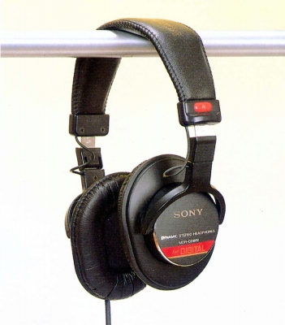
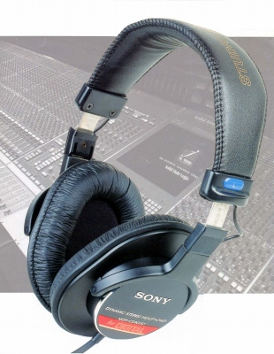

MDR-CD900ST


■価格 18,900円
■型式 ダイナミック型密閉式
■振動板 40�oドーム型
■インピーダンス 63Ω
■再生周波数帯域 5-30,000Hz
■許容入力 1,000mW
■感度 106ｄB/mW
■コード 2.5ｍ ステレオプラグ
■重量 200g（コード含まず）
■発売 1990年代
■販売終了
■備考 いつ頃どういう形態で販売が始まったのかは不明な点が多いが、1990年代末あたりから
オーディオ誌に登場するようになり、扱う店舗は限られるが一般でも購入可能となった。
1999年の雑誌広告
初期のモデルには「ST」と記載されていないようだ。
また、民生用とされるCD-900との正確な関連性は不明。
ヘッドバンドなどはむしろ兄弟モデルのCD-700のものに近い。